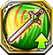
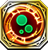
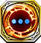
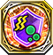
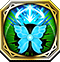

Command Gear
Resonance Skills obtained from Command Killers. Can only be use by Special units and Command Killers.
52000113

Aegis |
 ヘルの隠匿
ヘルの隠匿
|
|---|---|
| イージス装備時のみ発動。自身のHPが1000上昇し、相手のデュエルスキル発動率を30%減少させる | |
52000123

Aegis |
ヘルの追福 |
| 自身の守・精を150上昇する | |
420001001

Aegis |
中心だけ護りし必盾 |
| 1ターンの間、自身を含む周囲2マス以内の全ユニットの物攻・魔攻を100下降させる | |
3103513

Damocles |
 ヘルの掌握
ヘルの掌握
|
| クエスト開始から3ターン目までの間、自軍フェーズ開始時に、自身のHPが100%回復する | |
5301813

Forcas |
ヘルの統制 |
| 2ターンの間、自身および周囲2マス以内の味方ユニットの命中率下限を上昇する ※ターン経過毎に、命中率下限は90%、55%と変動する | |
3502713

Freischutz |
 フリッグの豊穣
フリッグの豊穣
|
| 2ターンの間、敵軍全ユニットの運を20下降する | |
3302613

Grayside |
フォルセティの調停 |
| 自身の物攻が15上昇する。さらに自軍フェーズ開始時、自身および周囲3マス以内の味方ユニットのHPを最大HPの15%分回復する | |
3202513

Hercule |
 トールの剛毅 |
| 自身の物攻が40上昇し、HPが90%以上の場合、さらに物攻・物防が20上昇する | |
5402013

Hyoha |
 テュールの烈戦
テュールの烈戦
|
| 自身のHPが300上昇し、射程1の攻撃が可能になるが、射程1での攻撃時、自身に追撃が発生しづらくなり、相手に追撃が発生しやすい ※弓ユニット以外が装備した場合は発動しない | |
5402023

Hyoha |
 テュールの気勢
テュールの気勢
|
| クエスト開始から2ターンの間、行動不可耐性を持つ ※この耐性はデュエル時以外の行動不可に対しても効果を発揮する | |
44020001

Hyoha |
超爆盛・激辛カレー |
| 周囲2マス以内の全ユニットに1ターンの間、忘却を付与する。また、自身には2ターンの間、忘却を付与する | |
5402213

Ichiibal |
 オーディンの欲望
オーディンの欲望
|
| 自身を除く、味方ユニット1体のコマンドスキルの使用回数を1回分回復する。さらにHP50%分回復する | |
5402223

Ichiibal |
 オーディンの詩篇
オーディンの詩篇
|
| クエスト開始から2ターンの間、封印・出血耐性を持つ ※この耐性はデュエル時以外の封印・出血に対しても効果を発揮する | |
44022001

Ichiibal |
 飽食美少女戦姫『どやっ☆』 |
| 周囲2マス以内の全ユニットに1ターンの間、毒を付与する。また、自身には2ターンの間、毒を付与する | |
5503713

Logistille |
 スクルドの神告
スクルドの神告
|
| 自身の魔攻がターン経過ごとに上昇する ※クエスト開始1ターン目は15。ターン毎に15上昇し、最大60上昇する | |
5503723

Logistille |
 スクルドの予見
スクルドの予見
|
| クエスト開始から2ターンの間、麻痺耐性を持つ ※この耐性はデュエル時以外の麻痺に対しても効果を発揮する | |
45037001

Logistille |
理想の姿は素敵！ |
| 周囲2マス以内の全ユニットに1ターンの間、行動不可を付与する。また、自身には2ターンの間、行動不可を付与する | |
3302513

Minerva |
オーディンの狂智 |
| 自身のHPが200上昇する。デュエル時、自身が有利属性の場合、与えるダメージが30%上昇する。さらに隣接する敵ユニットとのデュエル時、物攻・魔攻が20上昇する | |
5104613

Murgleys |
トールの豪放 |
| 自身の力が40上昇し、攻撃時、30%の確率で1ターンの間麻痺を付与する | |
5104623

Murgleys |
トールの雷鳴 |
| クエスト開始から2ターンの間、移動不可・回復不可耐性を持つ ※この耐性はデュエル時以外の移動不可・回復不可に対しても効果を発揮する | |
41046001

Murgleys |
 お肉とカステラは裏切らない |
| 周囲2マス以内の全ユニットに1ターンの間、デュエルスキル封印を付与する。また、自身には2ターンの間、デュエルスキル封印を付与する | |
3602013

Ness |
 スクルドの責務 |
| 自身および周囲3マス以内の味方ユニットのHPを30%回復し、2ターンの間、90%の毒・麻痺耐性を付与する | |
5203113

Nyoikinkobou |
フリッグの執念 |
| 自身の物攻がターン経過ごとに上昇する ※クエスト開始1ターン目は15。ターン毎に15上昇し、最大60上昇する | |
|
5203123
Nyoikinkobou |
 フリッグの恩情
フリッグの恩情
|
| クエスト開始から2ターンの間、忘却・挑発耐性を持つ ※この耐性はデュエル時以外の忘却・挑発に対しても効果を発揮する | |
|
42031001
Nyoikinkobou |
リボンに沈む食の威武 |
| 周囲2マス以内の全ユニットに1ターンの間、回復不可を付与する。また、自身には2ターンの間、回復不可を付与する | |
5603213

Orpheus |
フォルセティの仲裁 |
| 自身の魔攻が15上昇する。さらに自軍フェーズ開始時、自身および周囲3マス以内の味方ユニットのHPを最大HPの15%分回復する | |
5603223

Orpheus |
フォルセティの協和
|
| クエスト開始から2ターンの間、忘却・挑発耐性を持つ ※この耐性はデュエル時以外の忘却・挑発に対しても効果を発揮する | |
46032001

Orpheus |
満腹解消ライブ |
| 周囲2マス以内の全ユニットに1ターンの間、移動不可を付与する。また、自身には2ターンの間、移動不可を付与する | |
3103613

Ragnarok |
 ユグドラシルの九界 |
| 自身のHPが150上昇する。デュエル時、「失われた千年王国」ユニットに与えるダメージが15%上昇する ※コマンドキラーズ以外が装備している時、ダメージが上昇する効果は発動しない | |
3401713

Suiha |
テュールの紋章 |
| 自身のHPが200上昇し、物攻・魔攻が15上昇する |